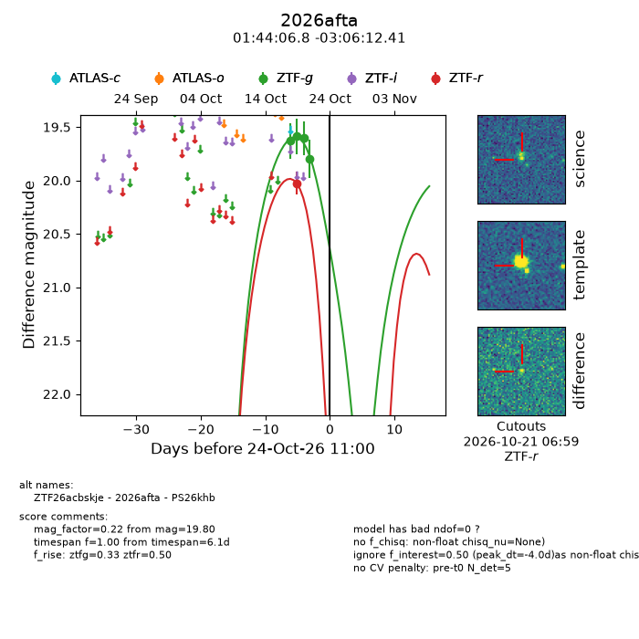
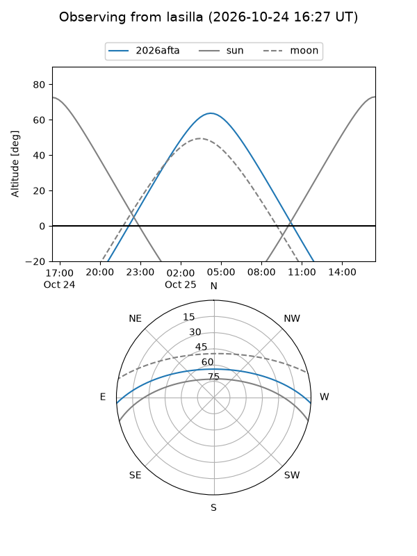
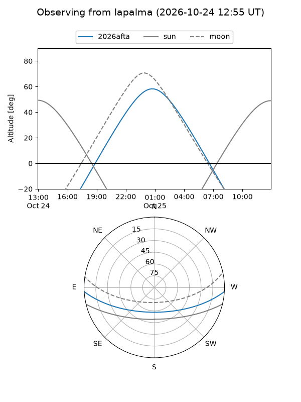
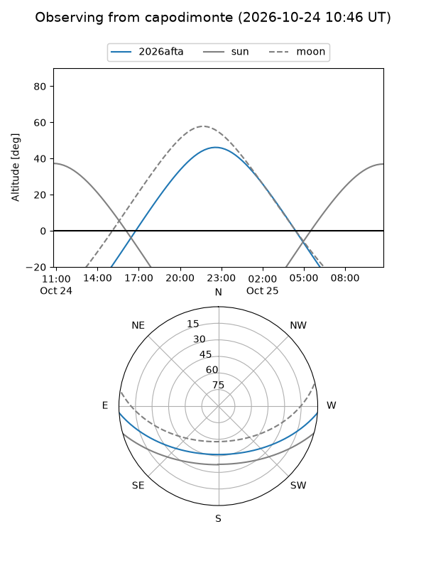
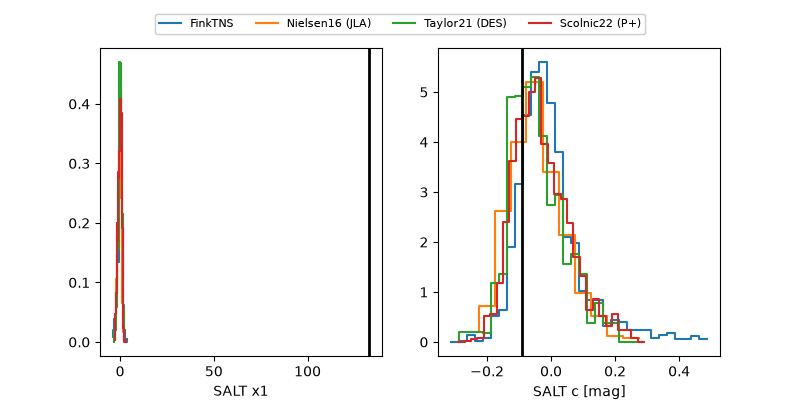

2026afta
Target 2026afta at 2026-10-24 23:01
Aliases and brokers:
FINK-ZTF: ztf.fink-portal.org/ZTF26acbskje
Lasair-ZTF: lasair-ztf.lsst.ac.uk/objects/ZTF26acbskje
ALeRCE-ZTF: alerce.online/object/ZTF26acbskje
YSE-PZ: ziggy.ucolick.org/yse/transient_detail/2026afta
TNS name: wis-tns.org/object/2026afta
Direct TNS query: direct search
alt names
ZTF26acbskje (ztf,fink_ztf)
2026afta (tns,yse)
PS26khb (panstarrs)
Coordinates:
equatorial (ra, dec) = 26.0284,-3.10345
equatorial (HMS+DMS) = 01:44:06.83,-03:06:12.41
galactic (l, b) = (152.8606,-62.87313)
Flags:
peak dt: -3.5
Photometry:
last ztfg=19.80, ztfr=20.03
4 ztfg, 1 ztfr detections
Lightcurve

Visibility



Additional plots
